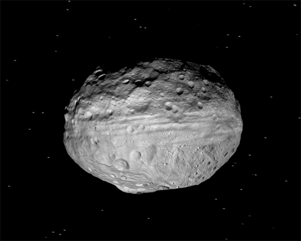
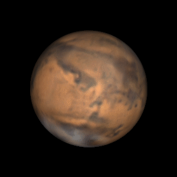
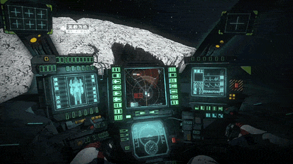
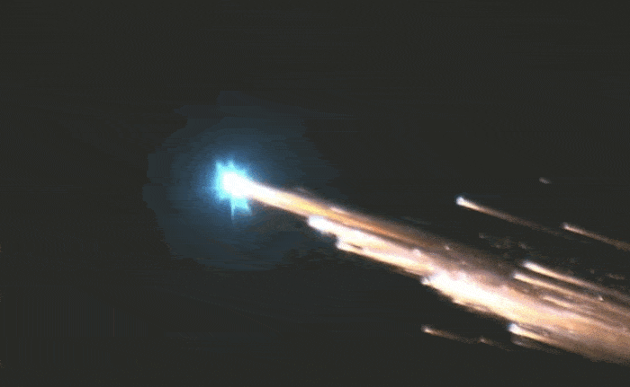

You fly for a long time, and eventually approach the asteroid belt.

You see many different asteroids along your journey, and you study them to use them as reference points. You can use these location points to compare with your galactic star map onboard the ship. The auto locator is not working though, so you have to manually log asteroids and compare their distance to pinpoint where you are in space.


You eventually run into a large asteroid that you are certain is either 2 Pallas or 4 Vesta, but you aren't sure of which it is. You do your best to map it, and realize it is only a small discrepency between your other calculations and would only result in a couple miles difference when you are very close to Mars. You can just adjust once you reach Mars, so you don't stress and you continue on you journey.

You spend many boring days in space, but eventually Mars grows into your field of vision. You are going to slingshot around Mars's gravity to speed up your journey from Mars to earth. This will require you to skim close to the Martian atmosphere, but if your galactic map calculations are right, you will only brush the carbon dioxide rich atmosphere.

As Mars looms larger in the sky day by day, you prepare yourself to manuever around Mars's gravity. Mars is small, so you will have to skim close to its surface enabling you to use more of its potential energy. The trajectory is risky, but you've had a long time to do your calculations. You begin your descent towards mars, passing below one of its moons, Phobos.

Your descent is going well, and you're speeding up significantly. Compared to your trajectory calculations, you're going a little faster than you expected. You worry this is a sign your star map was off, and you tilt your ship up to adjust.

All of the sudden you feel yourself slam into Mars's atmosphere! Sirens wail as you fight your joystick, and you feel your ship beginning to fragment as it burns up in Mars's atmosphere. You are going way too fast, and the friction of Mars's carbon dioxide atmosphere is slowly eroding your ship!


You must decide what you want to do...
Eject via your main escape pod and abandon your ship, ensuring you won't burn up in Mars's atmosphere. By doing this however, you will have to continue on your journey to earth with very little fuel.
or
Try and use the bottom of your ship as a heat shield so you can land on Mars. This would be extremely dangerous, but it would allow you to purchase a new ship if you could land. Also, you have plenty of galactic currency, but you don't know how long it will take to transfer to Martian currency.